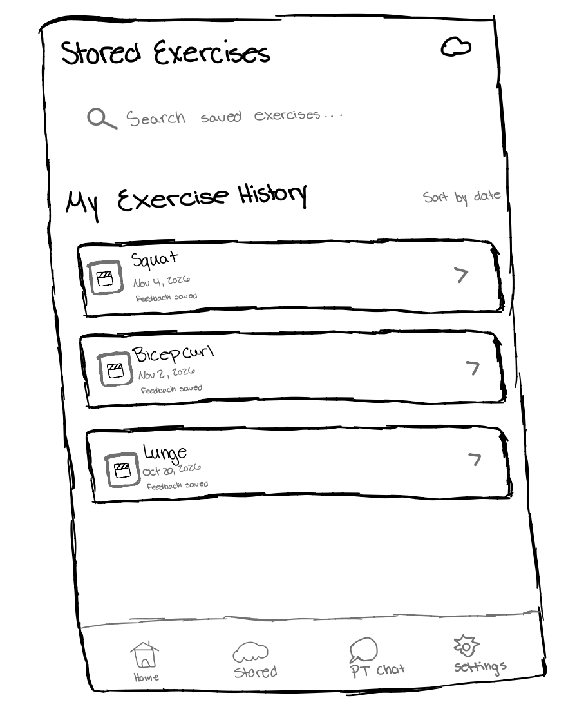

Wireframe
Wireframe
Wireframe
Sprint 4 / Initial app design
Review the team's Home, Feedback, Personal Trainer, and Stored Exercises page designs.
01 / Home page
The hand-drawn Home sketch shows how users find exercises, return to recent activity, and open saved exercise records. The other destinations in its bottom navigation are shown here only as labels; their page layouts are not drafted yet.
Page 01 / Entry screen

The Home page gives users a quick path to their next form check and the exercise records they have already saved.
The sketch sets out the page structure; camera actions, search behavior, and the other destinations still need interaction designs.
02 / Feedback page
This section focuses on the corrective guidance a user sees after a movement check is captured, from the live form issue to the quick evaluation state.
Page 02 / Form check

The feedback view explains what the user should adjust and gives them a quick way to evaluate whether the guidance was helpful.
This screen should stay concise and actionable so the user can adjust immediately without leaving the movement flow.
03 / Personal Trainer page
This section focuses on a one-on-one session between the user and a personal trainer where the trainer evaluates the form of the user and gives more tailored feedback, answers any questions the user may have, and overall helps the user understand where things may have gone wrong or right.
Page 03 / Personal Trainer

The personal trainer page gives the user a easy layout similar to most video call apps. The user has the option to turn on their camera and microphone. Although not shown on the image, the user can also type messages and they will be displayed on screen. (The speaking bubble is there to represent the trainer speaking live.)
This screen should stay concise and actionable so the user can adjust immediately without leaving the movement flow.
04 / Stored Exercises page
This section focuses on how users can access their previously saved exercises, recordings, and form feedback. The page allows users to review past workouts and revisit their feedback without having to repeat an exercise check.
Page 04 / Saved exercise history

The Stored Exercises page provides users with an organized history of their completed exercises. Each saved entry displays the exercise name, date, and feedback status, allowing users to quickly locate and review previous sessions.
The goal of this page is to make previous exercise records easy to find and review, allowing users to revisit their form guidance and track their progress over time.